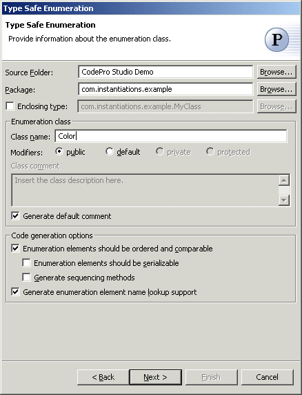
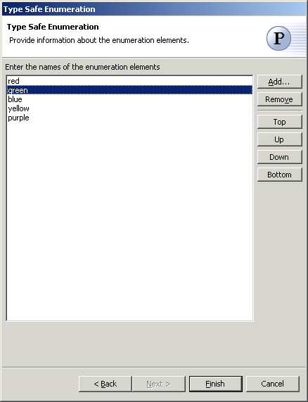

Type Safe Enumeration Pattern
The  Type Safe Enumeration
Pattern creates a class that approximates an equivalent Pascal enumeration or C enum. A
specific enumeration will be represented by a class with specific instances corresponding
to each element of the enumerations and public static final fields to access the
instances.
Type Safe Enumeration
Pattern creates a class that approximates an equivalent Pascal enumeration or C enum. A
specific enumeration will be represented by a class with specific instances corresponding
to each element of the enumerations and public static final fields to access the
instances.
Wizard

| Option | Description | Default |
| Source folder | Enter a source folder for the new class. Either type a valid source folder path or click Browse to select a source folder via a dialog. | The source folder of the element that was selected when the wizard was started. |
| Package | Enter a package to contain the new class. You can select either this option or the Enclosing Type option, below. Either type a valid package name or click Browse to select a package via a dialog. | The package of the element that was selected when the wizard was started. |
| Enclosing type | Select this option to choose a type in which to enclose the new class. You can select either this option or the Package option, above. Either type a valid name in the field or click Browse to select a type via a dialog. | The type or the primary type of the compilation unit that was selected when the wizard was started or <blank> |
| Class name | Type a name for the new enumeration class. | <blank> |
| Modifiers | Select one or more access modifiers for the new class.
|
public |
| Class comment | Enter the description of the class | <blank> |
| Generate default comment | Determines whether a default comment will be generated. The
default comment is of the form: Type Safe Enumeration: {class name} elements: {element list} |
<true> |
| Enumeration elements should be ordered and comparable | Determines whether the enumeration class will implement the Comparable interface | <true> |
| Enumeration elements should be serializable | Determines whether the enumeration class will implement the Serializable interface | <false> |
| Generate sequencing methods | Determines whether the enumeration class will implement first(), last(), predecessor() and successor() methods | <false> |
| Generate enumeration element name lookup support | Determines whether enumeration elements can be looked up by name | <false> |

| Option | Description | Default |
| Enumration elements | Click Add to enter the names of the enumeration elements that should be created | <blank> |
Applicability
So if you needed an "color" enumeration with elements red, yellow, blue, and green you would create a typesafe enumeration class Color and use it like the following
Color foo = Color.red;
...
if (foo == Color.green) {...
Note that since red, yellow, blue, green are represented by distinct instances of the class Color they can only be assigned to variables declared as type Color. That's why they're called typesafe.
A couple of things to note
- The class is declared final because the typesafe enumerations are not really designed to be subclassed and if you did so its behavior would probably not be what the programmer expected.
- The enumeration elements are all represented by public final static fields.
- The only constructor is private so the only possible instances of the class are those created to initialize the public static final fields